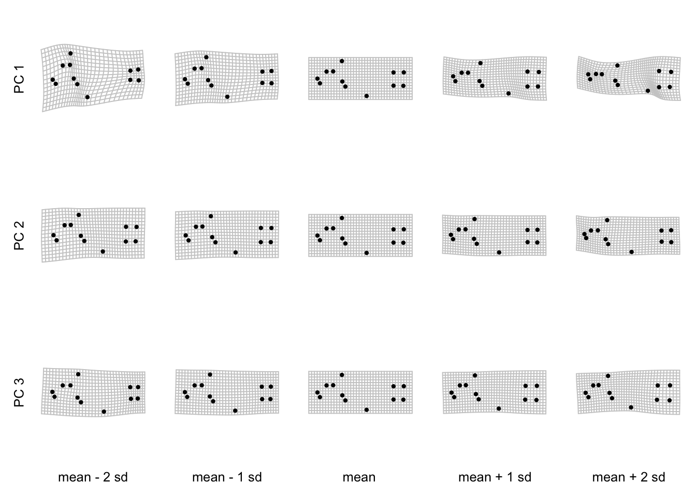
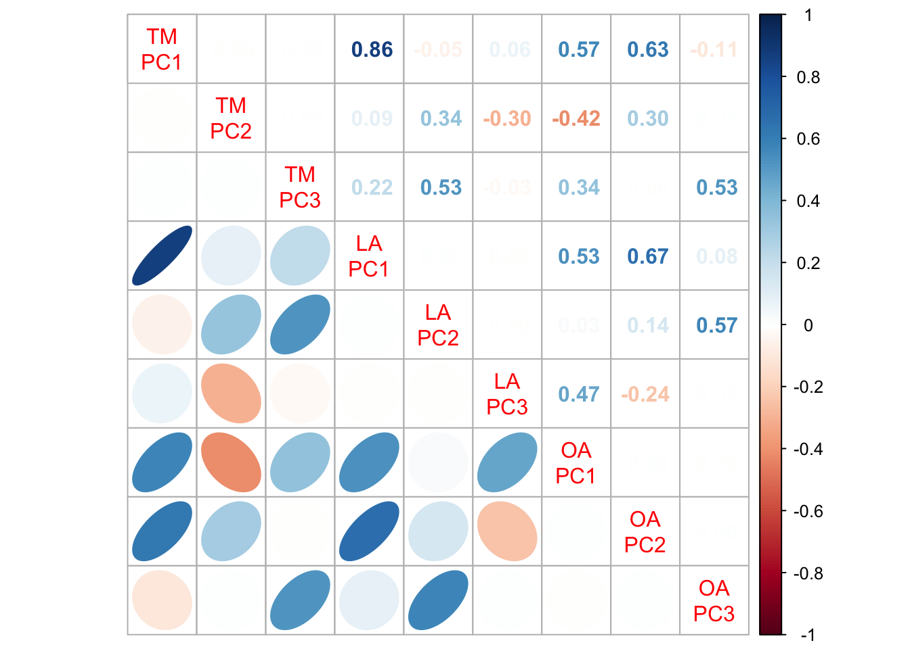

Marita Quitzau, Romain Frelat, and Vincent Bonhomme. Adapted by Thomas Smith
1.0 Introduction
This vignette aims to provide a quick introduction to morphometric analyses through a comparison of landmark and outline methods on coral reef fish. It was created based on R version 4.0.2 and Momocs version 1.3.2.
It is the companion tutorial for the published paper:
Quitzau, M., Frelat, R., Bonhomme, V., Möllmann, C., Nagelkerke, L., & Bejarano, S. (2022). Traits, landmarks and outlines: Three congruent sides of a tale on coral reef fish morphology. Ecology and Evolution, 12, e8787. https://doi.org/10.1002/ece3.8787.
1.1 Load data and library
library(Momocs)
Attaching package: 'Momocs'
The following object is masked from 'package:stats':
filter
# move to wherever you have saved the datasets foldersetwd("~/R_packages/R_projects/TSDisparity/")traits <-readRDS("datasets/fish_traits.Rds")landmarks <-readRDS("datasets/fish_landmarks.Rds")outlines <-readRDS("datasets/fish_outlines.Rds")
1.2 Explore datasets
These three data objects contain the morphological information of 112 images of fish. They comprise the morphological traits and general information about the taxonomy (stored in the object traits), the coordinates of landmarks (stored in the object landmarks), and the outlines (stored in the object outlines).
table(traits$family)
Acanthuridae Scaridae Siganidae
26 76 10
The dataset covers 41 species from 3 families. 26 individuals belong to the surgeonfishes (Acanthuridae), 76 to the parrotfishes (Scaridae), and 10 to the rabitfishes (Siganidae). Hereinafter, the outlines of the images are shown with families Acanthuridae, Scaridae, and Siganidae colored in red, blue, and green respectively.
# Set the color for each familypalF <-c("#dc322f", "#497dcb", "#85995e")# Attribute a color per imagecolF <- palF[traits$family]#Represent the outline of all the imagespanel(outlines, col=colF)
Remember, if you want to analyse your own data, make sure it is of the correct class and type. You can check these properties using the following functions.
You’ll notice that the outline and landmarks objects have two classes, one of which is ‘coo’. A Coo is a bespoke superclass of object in Momocs which contains three classes: ’Out’s (closed outlines), ’Opn’s (open outlines), and ’Ldk’s (configurations of landmarks).
Each element of each coo object corresponds to a shape. In the case of the landmark data, this shape takes the form of a matrix of coordinates.
Traditional morphometrics (TM) capture shape using ratios between lengths, angles, or areas measured on body parts. These ratios, also called morphological traits, often relate directly to specific functions, e.g. locomotion or diet.
The object ‘traits’ contains 13 morphological traits related to food acquisition or locomotion.
#remove the species and family informationtraitsonly <- traits[, 3:15]names(traitsonly)
We can use principal components analysis to summarise the variation across these 13 morphological traits and visualise them with the following script. Momocs relies on the base R function for principal components analysis, prcomp, to get the job done.
# Run a PCA on the traitspcaTM <-as_PCA(prcomp(scale(traitsonly)), fac =NULL)# Visualize the morphospace using the Momocs extension of plot, plot_PCAplot(pcaTM, col=colF, cex=1.3)
will be deprecated soon, see ?plot_PCA
Each point represents one shape, its location in morphospace based on on its loading on the the first two axes, the first two principal components (PC). The distance between points in morphospace reflects their morphological dissimilarity. Identical shapes will overlap perfectly, whereas massively different shapes will plot in different regions of the space. The colors indicate their family. As indicated by the axes labels, the first PC explains 29% of the variance, while the second and third PCs capture 16% and 11% respectively.
The PC are interpreted based on the loading of the traits. We can visualize them with a barplot().
The first component describes the elongation of the body and the head size. With a high score on PC1, species have high values of head length (HeadL), head depth (HeadD), oral gape position (OralGP), and relatively low values for body aspect ratio (BodyAR), and caudal peduncle throttling (CaudalPT). In other words, individuals with a positive score on PC1 have an elongated body, a relatively larger head (in relation to standard length and body depth), and a caudal peduncle relatively broad compared to the caudal fin depth. On the contrary, species with a negative score on PC1 have a more rounded body (nearly as deep as long), with a relatively small head and a narrower caudal peduncle.
The second component describes eye size (EyeS) and position (EyeP), as well as pectoral fin position (PectoP). PC2 is negatively correlated with eye size and positively correlated with eye and pectoral fin position. Fish with negative loadings therefore have high values of eye size and low values of eye and pectoral fin position. The opposite applies for fish with positive loadings. This results in the separation of fish with large, centered eyes and more ventral pectoral fins from those with smaller, higher positioned eyes and centered pectoral fins.
Lastly, the third component describes fin development and the resulting swimming style, which is either based on the dorsal and pectoral fin, or the caudal fin. Fish with positive scores have higher values for eye size (EyeS) and a higher pectoral fin aspect ratio (PectoAR). Fish with negative scores have higher values for the dorsal spine (DorsalS) and the caudal fin length (CaudalFL) (i.e. the ratio between the medial caudal fin ray and the longest caudal fin ray, indicating an either straight or curved caudal fin). This shows the trade-off between fish with large dorsal spines, straight caudal fins, small eyes, and long and narrow pectoral fins (dorsal-pectoral based swimming), and fish with small dorsal spines, curved caudal fins, larger eyes, and short and broad pectoral fins (caudal fin swimming).
3.0 Geometric morphometrics (landmark analysis)
Landmarks analysis (LA) is based on the Cartesian coordinates of landmarks, identified as homologous points that can be defined on all individuals within a population. The object landmarks contains the coordinates of landmarks:
# Here we plot the landmarks of Scarus chameleon# 47th image of our datasetldk_plot(landmarks[47], pch=16, cex=1.2, centroid=FALSE)ldk_labels(landmarks[47], cex =1.1)
It is crucial to isolate and minimise all sources of non-shape variation. Here, we chose to normalize landmarks using full generalized Procrustes superimposition.
We can illustrate the Procrustes adjustment by looking at the superimposition of the landmarks of all images before and after the generalized Procrustes superimposition.
Now we have (hopefully) isolated the shape variation in our data, we can summarise it using principal components analysis.
# Compute PCA for the landmarks coordinates pcaLA <-PCA(ldkPro)
To improve comparability between approaches, we will multiply the second PC loadings by -1. This operation doesn’t affect the distribution of points.
#adjust sign of PC2pcaLA$x[,2]<--pcaLA$x[,2]pcaLA$rotation[,2]<--pcaLA$rotation[,2]
Now visualise the morphospace.
# Visualize the morphological space defined by PC1 and PC2plot(pcaLA, col=colF, cex=1.3)
will be deprecated soon, see ?plot_PCA
The grey dots are the reconstructed configurations of landmarks from the loadings on the PCs. These give us some idea of which fish shapes correspond to which regions. Each colored dot represents one shape located in the morphospace, and is colored by family. As indicated by the axes labels, the first PC explains 66% of the variance, the second and third PCs capture 11% and 6% respectively.
A closer look at the deformation grids (remember those?) along the PCs can help their interpretation. We can visualize the contribution of the three first PCs using a custom function, PCldkContrib.
# load functionPCldkContrib <-function(pca, ldk, nax =1:3, seqsd =seq(-2,2,1), linex=0.5, liney=1){ list2arr <-function(li){ ar <-array(NA, dim=c(dim(li[[1]]), length(li)))for (i inseq_along(li)){ ar[,,i] <- li[[i]] }return(ar) } cons <-apply(list2arr(ldk$coo), c(1,2), mean)par(mfrow=c(length(nax), length(seqsd)), oma=c(2,2,0,0))for (i in nax){for (j in seqsd){ sd.i <- cons+matrix(pca$rotation[, i]*j*sd(pca$x[, i]), ncol=2)tps_grid(cons, sd.i, shp =FALSE)points(sd.i, pch=20, col="black")if (j==seqsd[1]){mtext(paste("PC", i), side =2, line = liney, cex =0.8) }if (i==nax[length(nax)]){ sgtxt <-ifelse(j<0, "-", "+") addtxt <-ifelse(j==0, "", paste(sgtxt, abs(j), "sd"))mtext(paste("mean", addtxt), side =1, line = linex, cex =0.8) } } }}# run functionpar(mar=c(1,1,0,0), cex=1.5)PCldkContrib(pcaLA, ldkPro, nax =1:3, liney=1, linex=1)
This lets us evaluate the information content of the first three principal components, just as we did with the traditional morphometrics.
The first component describes the elongation of the body and head depth, and caudal peduncle. This observation is based on the overall polygon bounded by the extreme landmarks (landmarks 2, 3, 5, 6, and 8). Additionally, the landmarks of the head (landmarks 1-3 and 11-12) are further apart in fish with a negative loading on PC1 and narrow on the other side. From left to right, the landmarks of the eye (11+12) come closer to the landmarks of the mouth (1+2), the dorsal fin insertion (3) and the anal fin insertion (8) drift to a more posterior position, and the landmarks around the caudal peduncle (4-7) become broader.
The second component highlights the eye and mouth, as well as the pectoral-anal fin distance, and variance in the caudal peduncle. In fish with positive scores on PC2, the landmarks of the mouth (1+2) are closer to the landmarks of the eye (11+12) than in fish with negative scores. Additionally, the pectoral fin (landmarks 9+10) is closer to the anal fin (8) in fish with negative scores and the angle between these two fins is steeper. Fish with negative scores tend to have a more trapezoid caudal peduncle (landmarks 4-7), while the caudal peduncle from fish with positive scores are more straight.
The third component is about the eye size, the mouth-pectoral fin relation, and the caudal peduncle. Fish with negative scores on PC3 have larger eyes, i.e. a higher distance between landmarks 11 and 12, compared to fish with positive scores on PC3. The mouth (landmarks 1+2) and the pectoral fin (landmarks 9-10) are at the same vertical level in fish with positive scores, while the mouth is higher than the pectoral fin insertion in fish with negative scores on PC3. Again, a difference is found in the caudal peduncle (landmarks 4-7), which broadens along PC3.
4.0 Outline analysis
Outline analysis (OA) describes the coordinates of points along the outline of organism through mathematical functions. The object outlines contains the outlines of 112 images of fish.
To remove the size and rotation variation from the outlines, we have identified five reference landmarks: (1) ventral insertion of the caudal fin; (2) insertion of the pelvic fin; (3) snout tip; (4) anterior insertion of the dorsal fin; (5) dorsal insertion of the caudal fin. The third landmark (snout tip) is used as the starting point of the outline.
We can visualize the outline and their landmarks, using the same image of Scarus chameleon
# Here we plot the outline of Scarus chameleon# 47th image of our datasetcoo_plot(outlines[47], xy.axis=FALSE)# Add the landmarks positionpoints(outlines[47][outlines$ldk[[47]],], pch="+", col="red", cex=2)# and their labeltext(outlines[47][outlines$ldk[[47]],], labels =1:5, col="red", pos=c(1,1,4,3,3), cex=1.5)

Similar to LA, we used a full generalized Procrustes superimposition to align the images and remove differences in size and rotation.
We can visualize how the Procrustes adjustment improved the comparability of the outlines by looking at the superimposition of the outlines before and after Procrustes adjustment.
Now we perform an elliptical Fourier analysis (EFA). The main idea of EFA is to translate the outline into two periodic functions in x and y, that can be decomposed by Fourier transforms.
The first step is to figure out how many harmonics are needed to describe the outlines.
The harmonic coefficients of the 15 harmonics can be treated as shape variables. As such, we can summarise the variation across them through PCA.
#Run a PCApcaOA <-PCA(fish_efa)
Again, we will adjust the signs of the resulting PC loadings by multiplying them by -1.
#adjust sign of PC1pcaOA$x[,1]<--pcaOA$x[,1]pcaOA$rotation[,1]<--pcaOA$rotation[,1]#adjust sign of PC3pcaOA$x[,3]<--pcaOA$x[,3]pcaOA$rotation[,3]<--pcaOA$rotation[,3]
And now we can visualise the morphospace.
#Visualize the morphospaceplot(pcaOA, col=colF, cex =1.5, xlim=range(pcaOA$x[,1]),ylim=range(pcaOA$x[,2]))
will be deprecated soon, see ?plot_PCA
The grey fish shapes are theoretical shapes estimated at regular intervals on the factorial plane. The location of each point is based on the loading of the harmonics on each component. Each represents a single outline and are once again colored by family. As indicated by the axis labels, the first PC explains 39% of the variance, the second and third PCs capture 20% and 16% respectively.
Looking at the variation of shapes along the PCs can help their interpretation. We can visualize the contribution of the three first PCs:
PCcontrib(pcaOA, nax =1:3,gap =0.8)
Warning: `mutate_()` was deprecated in dplyr 0.7.0.
ℹ Please use `mutate()` instead.
ℹ See vignette('programming') for more help
ℹ The deprecated feature was likely used in the Momocs package.
Please report the issue at <https://github.com/MomX/Momocs/issues>.
The first component describes the elongation of the body and the anal fin position. The overall shape shifts from an elongated ellipse to a near-circle. Linked to that, the gap between the pelvic and the anal fin is greater in the elongated fish than in the rounded.
The second component highlights the development of the caudal fin as well as the head shape, including the position of the mouth. The caudal fin is concave for individuals with negative scores and rather straight or convex for positively-scored individuals. The head varies from a deeper but shorter head with a mouth located further to the bottom of the head to a pointed head with a centered mouth.
The third component describes the size of the fins. The fins of fish with negative scores on this axis were relatively more developed than fish with positive scores. The strongest difference occurred in the pelvic fin, with negative scores capturing a highly distinct pelvic fin and the positive scores a smaller pelvic fin situated closer to the body.
5.0 Morphospace comparison
Momocs supports a variety of methods for comparing different types of shape analysis. First, we concentrate on the PCs themselves. We will compute a correlation matrix (using Pearson’s correlation coefficient) to investigate whether the principal components of each method capture the same morphological variability among individuals. Then we will also investigate the degree of separation in morphospace between known taxonomic and functional groups.
5.1 Correlation matrix
Computing a correlation matrix gives us the opportunity to compare whether PCs describe the same variance, i.e. we can answer the question: are they highly correlated?
The correlation matrix is divided into the correlation values (upper right) and ellipses derived from scatterplots (bottom left). Blue values and ellipses indicate positive correlations, red ones indicate negative correlations. The intensity of the color reflects the strength of the correlation.
The strongest correlation is found between the first PCs of TM and LA, both of which are highly correlated with the first PC generated through OA. This correlation reflects the main morphological variation of nominally herbivorous coral reef fish, which is linked to body elongation. Interestingly, OA separates the information of elongation across 2 components, whereas the first PCs of TM and LA correlated additionally with PC2 of OA. The correlation of the third PCs of TM and OA, and the PC2 of LA highlights variances in fin shapes, covering the dorsal, pectoral and anal fin.
5.2 Differentiation of taxonomic groups
A second way to compare morphometric methods is to compare their ability to capture the taxonomic grouping of the fish based on their morphology. Here we use the taxonomic unit “family”:
par(mfrow =c(3,2))#TMplot(pcaTM, fac=traits$family, eigen =FALSE)
will be deprecated soon, see ?plot_PCA
plot(pcaTM, fac=traits$family, eigen =FALSE, yax =3)
will be deprecated soon, see ?plot_PCA
#LAplot(pcaLA, fac=traits$family, morphospace =FALSE, eigen =FALSE)
will be deprecated soon, see ?plot_PCA
plot(pcaLA, fac=traits$family, eigen =FALSE, morphospace =FALSE, yax =3)
will be deprecated soon, see ?plot_PCA
#OAplot(pcaOA, fac=traits$family, morphospace =FALSE, eigen =FALSE)
will be deprecated soon, see ?plot_PCA
plot(pcaOA, fac=traits$family, eigen =FALSE, morphospace =FALSE, yax =3)
will be deprecated soon, see ?plot_PCA

The methods discriminate between families. The family Acanthuridae is displayed in red, Scaridae in blue, and Siganidae in green. A continuum from parrotfish (Scaridae) to rabbitfish (Siganidae), to surgeonfish (Acanthuridae) is detected by all three methods. The family Acanthuridae is relatively widespread using OA, which can be explained by the fact that OA describes variance in elongation across both PC1 and PC2, while TM and LA describe it across PC1 alone. Additionally, the detection of the highly curved caudal fin (e.g. genus Acanthurus) spreads the family across the morphospace. The family Siganidae is separated from the Acanthuridae by the second and third PC. OA shows most overlap of groups. Also TM shows overlap between Acanthuridae and Siganidae. LA results in the most distinct groups with no overlap.
These is a really great demonstration of how improved resolution can change our perception of disparity.
5.3 Quantification of differentiation
In addition to visual interpretations with the convex hull in morphospace, we can quantify the degree of differentiation among taxonomic groups by calculating their silhouette value. The silhouette value is based on the difference between the average distance within groups (their cohesion or density) and the average distances between groups (their separation). The silhouette value ranges from -1 to +1, with higher values indicating a high degree of separation.
Let’s start by calculating the silhouette value for the traditional morphometrics data.
#Transform family into categorical numbersfam <-as.numeric(traits$family)#Compute the silhouette for each morphospacesTM <- cluster::silhouette(fam, dist(pcaTM$x[, 1:3]))sLA <- cluster::silhouette(fam, dist(pcaLA$x[, 1:3]))sOA <- cluster::silhouette(fam, dist(pcaOA$x[, 1:3]))#Average silhouette value for TM summary(sTM)$avg.width
[1] 0.4407447
And now the landmark data.
#Average silhouette value for LA summary(sLA)$avg.width
[1] 0.6520176
Finally, the outline data.
#Average silhouette value for OA summary(sOA)$avg.width
[1] 0.4278421
The silhouette values support what the plots are showing - that all methods are able to differentiate families in morphospace. Any value above 0.4 is considered high. In this case, LA shows the highest separation among families with a silhouette of 0.65.
Why not try these analyses again with a different grouping scheme? Perhaps one based on genus? All you need to do is add another column to the traits object denoting genera.